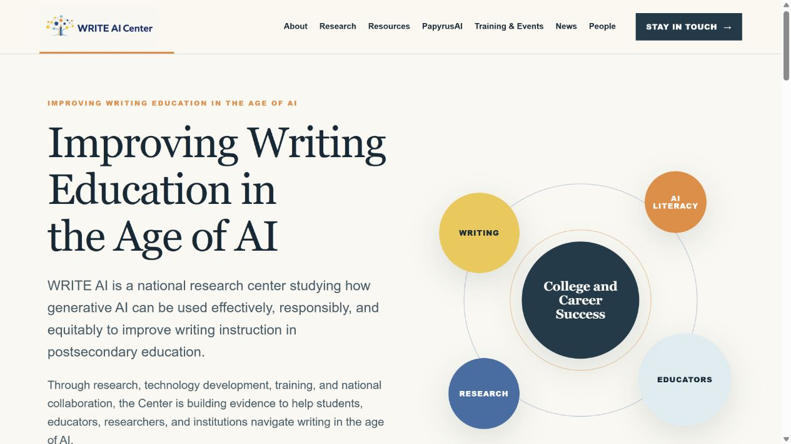
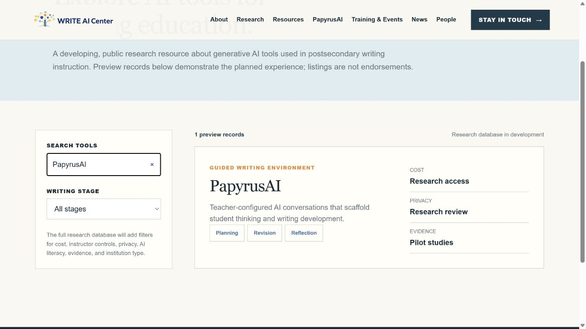
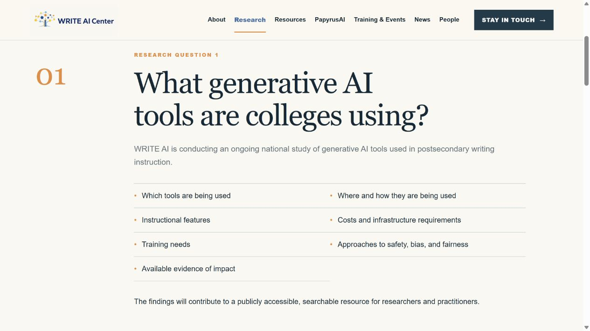
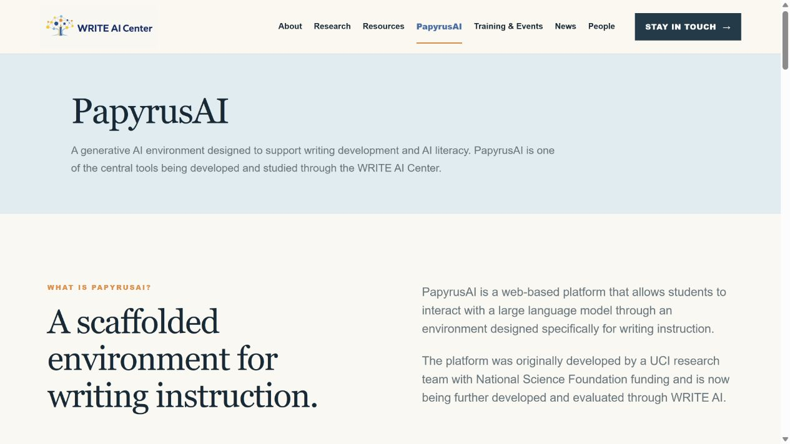
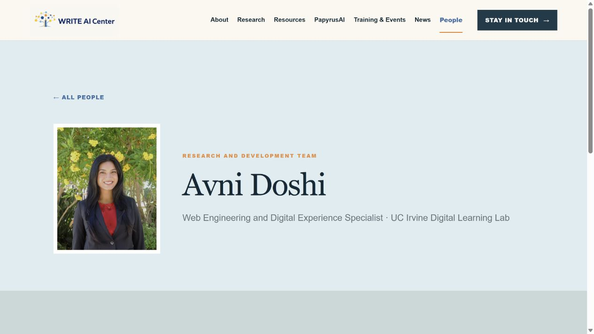

WRITE AI Center
A production web platform for a national research center studying how generative AI can improve writing instruction in postsecondary education.
Overview
WRITE AI is a national research center focused on effective, responsible, and equitable applications of generative AI in postsecondary writing education. Its public website needed to support multiple audiences while organizing research, PapyrusAI, training, resources, news, people, and partner organizations within a maintainable technical system.
I delivered the platform as a responsive React and TypeScript application with reusable route patterns, structured content models, an interactive AI-tools directory, accessible navigation, and a Cloudflare deployment architecture.
What I did
I owned the website's design and engineering from initial information architecture through production deployment. I translated stakeholder and research requirements into a responsive component system, then implemented the interface in React and TypeScript using Vinext's Next-compatible routing model and Vite-based build pipeline.
I developed reusable layouts for research areas, resource collections, events, news stories, team profiles, and partner organizations. Shared navigation and page-shell components provide consistent behavior across routes, including active-page states, semantic landmarks, keyboard-accessible controls, and mobile navigation.
For the AI-tools directory, I built a stateful search and writing-stage filter with React hooks and derived result sets. I also defined a relational Drizzle schema for tools, writing stages, resources, and people, including a many-to-many tool-to-writing-stage model and fields for privacy, bias, cost, infrastructure, evidence, and verification status.
I prepared the application for Cloudflare Workers and D1, configured server-side rendering and image optimization, and added automated tests that verify the homepage, primary routes, and organization profiles render successfully in the production worker environment. I also used Google Apps Script to automate newsletter signup handling and connect form submissions to the Center's subscriber workflow.
System architecture and delivery
The application separates reusable interface components, structured content, client-side interactions, database models, and worker infrastructure so each layer can evolve independently. This architecture supports a growing research center without requiring one-off page implementations as new tools, people, resources, events, and partner records are added.




